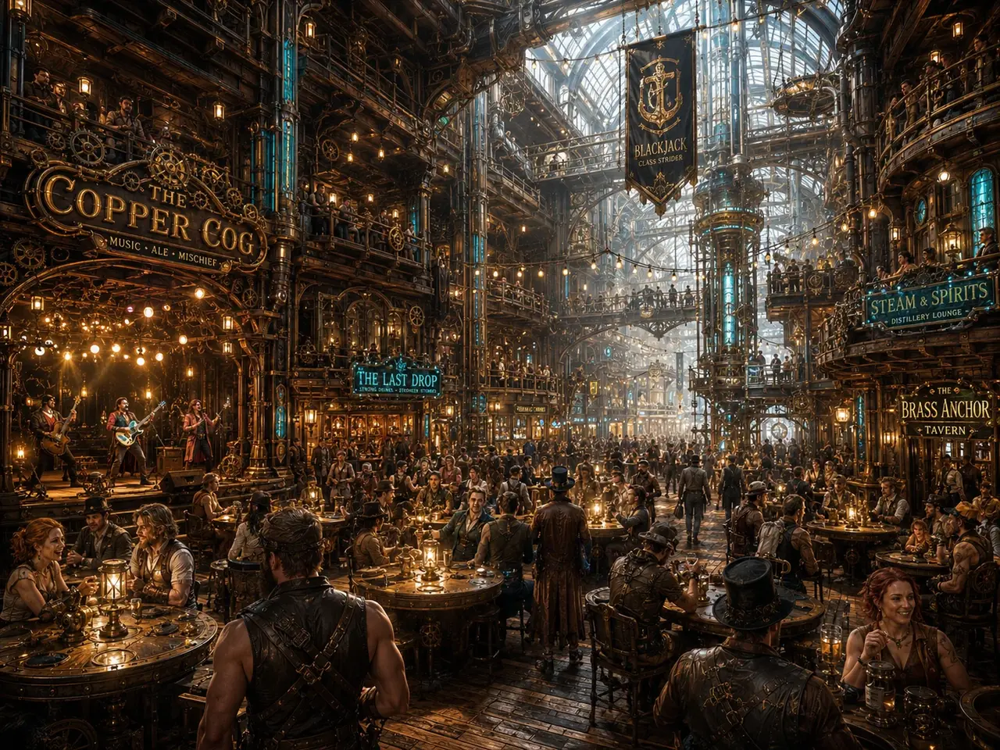

Captain's Log

The Auger's grinding effect was sitting too high and thin — it read like loose change rattling in a cup, which is not what a massive rock-chewing machine should sound like. It was one of those things you stop noticing after a while and then one day you hear it fresh and can't unhear it.
Pulled it apart and rebuilt it lower, with harder transients — loud, chunky chomps that actually feel like something with weight doing something violent. The difference when you drop it back into context is immediate. Sound does more structural work than I think people realize; it tells you how big something is before your eyes finish the job.
Small fix, but it's the kind that makes a space feel more credible. The Auger is a fixture — it's in the background of a lot of time players spend in that area — so getting it wrong quietly undermines everything around it. It sounds right now. Moving on.